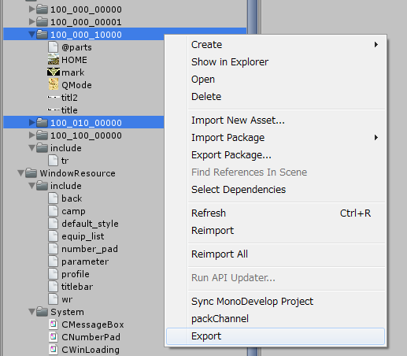
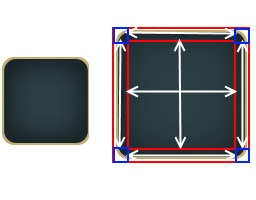

The texture¶
Please refer here to access the texture resources on C#.
In the window system , it uses what summarizes some of the texture(texture atlas).It can be rendered by a small mesh by summarized some of the texture.
Also, when do the texture atlas,it automatically reduced color textures to 16bit, and performs dithering .
It can be chosen whether to perform dithering for each part.
■Texture part
It can also be called a “part”. This is a previous texture atlas.
■The texture
When referred to as a texture in this document , it refers to the texture after the atlas.In addition, in order to clearly separate the normal texture , sometimes referred to as a texture resource.
How to make a texture resources¶
Start the AssetBuilder.
Create a folder in the MulID under the “TextureResource” folder in the project (“Assets/KsSoft/TextureResource”).
Place the texture in the folder .
Highlight a folder, please select the [Right-Click] → [Export] (multiple can be selected).
Thus, the asset bundle named 100_000_00000.unity3d is generated under the “assetbundles” folder.
■The texture name constraints
The name of the texture atlas must be 5 characters , except for the extension .
This is because it is encoded as FiveCC .
Other, it can also be used MulID file name.
BTN00.pgn
000_000_00010.png
The definition file @parts.def¶
If the “@parts.def” placed in the texture folder, texture parts are converted along the definition file.
Because it is a simple text file , it can be edited using the editor of your choice.
The file encoding is UTF8.
Choose whether to convert to a resource.
RESOURCE = ON/OFF;
When you enable RESOURCE as follows , to create a file such as the following under the “KsSoft/Resources/” folder.
- 001_000_00000.spr
- 001_000_00000.tex
By loading these two files , it is possible to load through the resources.
RESOURCE = ON;
PART("partA") {
COLOR = 0.5,0.5,0,5,1;
};
PART("partB") {
COLOR = 0.5,0.5,0,5,1;
};
Texture Format¶
FORMAT = Texture Format;
The default texture format is RGBA4444 .
Otherwise, it is possible to specify a PNG or JPG .
Except when you want to specify a 16bit texture, please dithering to OFF.
DITHER = OFF;
FORMAT = RGBA32;
PART("partA") {
COLOR = 0.5,0.5,0,5,1;
};
PART("partB") {
DITHER = OFF;
COLOR = 0.5,0.5,0,5,1;
};
How to texture atlas as PNG or JPG file.¶
After summarizes some texture(texture atlas), when converting a texture to asset bundles, it is possible to convert the textures to a PNG or JPG files.
However, when it is loaded on the application, it is deployed as 32bit texture.
Please use it consider the advantages and disadvantages.
Format |
Texture formats on application |
|---|---|
| FORMAT = PNG; | ARGB32 |
| FORMAT = JPG; | RGB24 |
Advantage
Asset size decreases (= download size is smaller).
Disadvantages
To be deployed as a 32bit texture and pressure on the VRAM and the main memory.
In addition, also at the expense of rendering speed.
Note
On a narrow memory bandwidth smartphone, performance degradation.
The default value for dithering¶
DITHER = ON/OFF;
Whether or not to the dithering can be set for each texture part.
When you do not specify, you can be selected either whether to default values.
In this example, partA is done the dithering, partB is not done.
DITHER = ON;
PART("partA") {
COLOR = 0.5,0.5,0,5,1;
};
PART("partB") {
DITHER = OFF;
COLOR = 0.5,0.5,0,5,1;
};
Switching of the shader¶
SHADER = "SHADER PATH";
You can specify a shader to one texture resources.
It is not possible to switch the shaders in the texture parts.
However, it is possible to switch the texture resource unit.
SHADER = "Custom/Billboard";
PART("blck") {
COLOR = 1,1,1,1;
};
The part definition and aliases¶
Definition of parts can be defined in the form such as the following.
PART(Texture part file name) {
Property 0;
Property 1;
：
Property n;
};
PART(Alias name,Texture part file name) {
Property 0;
Property 1;
：
Property n;
};
It is possible to alias a different name for one texture parts.This makes it possible to act as parts with different properties in the same part.
For example, it is defined as follows, “BTN00”, the texture color is rendered as it is.On the other hand,”BTN01” is dark rendering.
PART("BTN00") {
COLOR = 1,1,1,1;
};
PART("BTN01","BTN00") {
COLOR = 0.5,0.5,0.5,1;
};
The part definition properties¶
COLOR = R,G,B,A;¶
Change color.
Elements of each color, specified in 0-1.
The default is 1, 1, 1, 1.
DITHER = ON/OFF;¶
It is possible to select whether or not to dithering parts.
When the dithering to ON,it is done by the Jarvis, Judice, and Ninke dithering
The default is ON.
NODIVIDE;¶
NOPATCH;¶
To perform the normal expansion when you enlarge parts.
Division of parts default has become NODIVIDE.
DIVIDE3H = Left fixed width,Right fixed width¶
PATCH3H = Left fixed width,Right fixed width¶
When expanding a part, only the left and right of the specified width is fixed, to enlarge the middle.
PART("BTN01") {
DIVIDE3H = 24,24;
DITHER = ON;
};

DIVIDE3V = Top fixed height,Bottom fixed heighth¶
PATCH3V = Top fixed height,Bottom fixed heighth¶
When expanding a part, only the top and bottom specified height is fixed, to enlarge the middle.
PART("BTN01") {
DIVIDE3V = 24,24;
DITHER = ON;
};
DIVIDE9 = Top left fixed width, Top left fixed height, Bottom right fixed width, Bottom right fixed high¶
PATCH9 = Top left fixed width, Top left fixed height, Bottom right fixed width, Bottom right fixed high¶
When expanding the part, only the four sides of the specified size is fixed, to enlarge the middle.
PART("FRAME") {
DIVIDE9 = 40,40,40,40;
DITHER = OFF;
};

The include path¶
The include path is set to the following path.
Assets/KsSoft/TextureResource/include
@parts.def file that is automatically included¶
The following file when compiling the “@parts.def”, is automatically included. it is useful to describe a common set in this file.
Assets/KsSoft/TextureResource/include/tr.h
Preprocessor¶
You can use the same as C language preprocessor.
Preprocessor |
Description |
|---|---|
// Comment |
Line comment |
/* Comment */ |
Block comment |
#include “file name” |
Include the file |
#define constant |
Definition of a symbolic constant |
#define Function macro |
Function macro |
#if defined(symbol definition) ～ #endif |
Conditional compilation |
| #ifdef ～ #endif | Conditional compilation |
| #ifndef ～ #endif | Conditional compilation |
| #pragma once | Multiple include prevention |
BuildTarget is defined as a macro.
#if defined(StandaloneWindows)
MS-Windows
#else
Other
#endif